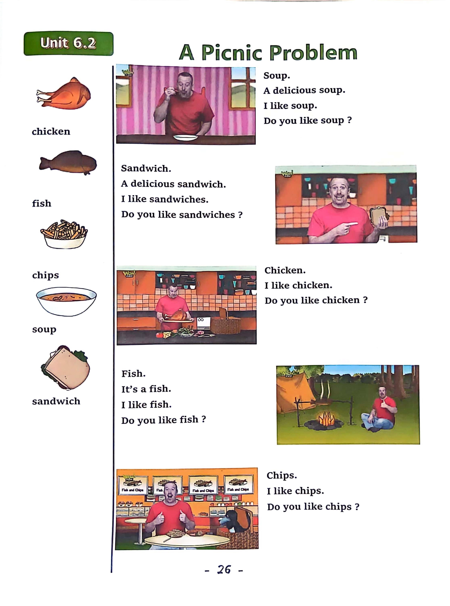

Day 26
Unit 8 · story
教材重点
教材重点依据网盘文件“第四级绿色每日打卡全.pdf”，PDF 第 28 页对应 Day 26；以原图为准，避免对图片文字做不可靠的自动识别。
网盘教材重点原图 · PDF 第 28 页对应 Day 26

Unit 8 · story · 6–7岁
say · look · family · hello
Hello, hello, my name's Steve.
台词本为机器转写，可能存在识别误差；不等同于视频逐字原声。
详细内容
Part 1 核心词汇
必须掌握 · 4 个Part 2 跟读句型与句型拓展
左侧保留台词本原句，右侧为替换练习；拓展内容不是视频逐字台词。
Hello, hello, my name's Steve.
It's time to play. It's time to play in English.
Grandma, grandad, uncle.
Auntie and cousin, K. That's my mom. Upload the photo.
My dad goes here, upload, good, good, that's my brother, load of photo, my sister.
Part 3 台词本全文
来源：第4级台词本 · 026.Wow!Green - Unit 8 story2.pdf。以下保留网盘 PDF 的机器转写文本，仅清理了文件路径页眉和空行。
Hello, hello, my name's Steve.
It's time to play. It's time to play in English.
Grandma, grandad, uncle.
Auntie and cousin, K. That's my mom. Upload the photo.
My dad goes here, upload, good, good, that's my brother, load of photo, my sister.
Yeah, and I have me.
Great, that's my family.
Oh, hey, hello, boys and girls, hi, I'm working on my family tree. So is Maggie, but.
I don't know where Maggie is anyway. Look at my family tree, hey, look, this is my brother.
My sister and me. HA, HA, my dad and my mom.
But hey, who goes.
Here, hmm, well, that is my mum's mum.
I've got a photo here, hey, look, loading, oh, who is it it's my grandma. Hey.
Let's pretend to be old like my grandma. So when I say, who is it.
You say it's Grandma, are you ready So who is it.
It's grandma, who is it?
It's grandma, who is it?
It's Grandma, hello, grandma. How well done, okay? So my mom's mom, my grandma.
Goes here, great, but who goes here? Well, that is my mum's dad. It's my.
Here grandad, hey, let's pretend to be old Grandads. And when I say.
Who is it You say it's grandad, so who is it.
It's grandad, who is it?
It's grandad, and again, who is it It's grandad, well done, so my grandad goes here.
Because my grandad is my mum's dad. Okay?
Who is this? Oh, this is my uncle.
His name is David, it's uncle David, so when I say, who is it.
You say it's Uncle David, are you ready Who is it.
It's uncle David, who is it It's uncle David, who is it it's uncle David. Yeah.
My uncle David goes here.
Because my uncle is my mum's brother, yeah, okay, who goes here?
/
-
/4/026.Wow!Green - Unit 8 story2.txt[2022/3/29
星期二
6:49:31]
Hmm, that's a bit more difficult, isn't it? Well, I'll show you, oh, look,
This is my auntie.
It's my auntie Sarah, again, when I say, who is it you say it's auntie Sarah, so.
Who is it It's auntie Sarah.
Who is it It's auntie Sarah, who is it.
It's aunty Sarah, yeah, aunty Sarah goes here by my uncle. Okay. But hey.
My uncle and my aunt have got a little baby, oh, look here she is.
It's my.
Cousin Kate, hey, let's pretend to be little babies. When I say, who is it.
You say it's cousin Kate, so who is it It's cousin Kate, who is it.
It's cousin Kate, who is it It's Cousin Kate, yeah, well, done, it's my cousin.
Hey, have you got any cousins? Yeah.
How many cousins have you got? How, hi, maggie, hey, who's that.
Who's that? Hey?
I'l
l
give you a clue. Maybe you can help Maggie.
This is my uncle and auntie's little baby. It's my cousin.
Yeah, my cousin, hey, maggie.
Who's this Do you know, I'll give you a clue It's my mum's brother, it's my girl.
Uncle here, one more monkey.
Whos this Can you help? Maggie? Look, this is my mum's dad, who is it.
It's my granddad. Hey great.
Hey Steve, I've finished my family, really, you finished your family tree, OK, let's go and have a look.
Oh,
Maggie is family. Hello. Everyone.
Look, maggie's got lots of uncles, lots of aunties, lots of cousins, brothers and sisters.
Noisy family. Next time.